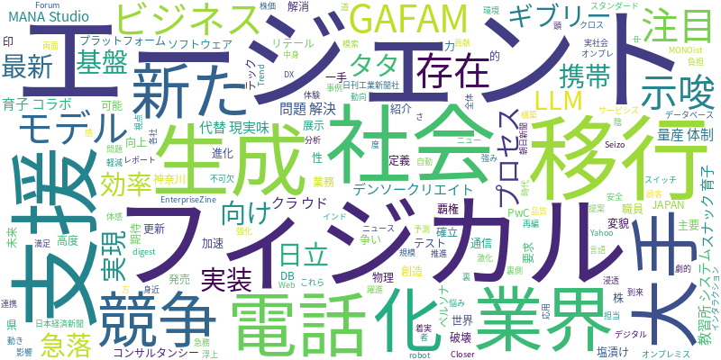

☁️ 今日のトレンドワード

📰 今日のピックアップニュース (10件)
AI社会到来、業界再編は避けられない
PwCのレポートは、AIが社会に浸透し、主要業界を破壊と創造の両面から変貌させる未来を予測。AI技術の活用が企業の競争力に不可欠となり、新たなビジネスモデルや働き方の模索が急務であることを示唆しています。
GAFAMも注目、生成AI競争の陰で日本企業が躍進
生成AIの覇権争いが激化する中、GAFAMでさえ注目せざるを得ない日本の「隠れた企業」が存在。その強みは、大手とは異なる視点での技術開発やビジネスモデルにあると分析されています。競争の裏側で着実に存在感を示す企業の動向に注目です。
ギブリー、MANA Studioを最新LLMに対応
ギブリーは、生成AI・AIエージェント活用プラットフォーム「MANA Studio」を更新。最新の大規模言語モデル（LLM）に対応させることで、より高度なAI活用を支援し、企業のDX推進を加速させることを目指しています。
AIエージェントがクラウド移行を支援、DB移行問題解決へ
AIエージェントがオンプレミス環境からクラウドへの移行を支援する可能性が浮上。特に、データベース移行における「塩漬け問題」をAIが解決する一手となるか期待されており、効率的かつ安全な移行プロセス実現への道が開かれるかもしれません。
印タタ株急落、AI代替の現実味。
インドのタタ・コンサルタンシー・サービシズの株価が急落。これは、AIによる業務自動化や代替が進む現実味が増してきたことを示唆しており、ITサービス業界におけるAIの影響力の大きさを物語っています。
日立、フィジカルAIで「スナック育子」とコラボ
日立のAIペルソナがフィジカルAIとして進化。「スナック育子」とのコラボ展示を通じて、リテールテックJAPAN 2026でその体験が紹介されました。AIがより人間らしいインタラクションを実現する可能性を示唆しています。
教習所を救ったAIシステム、電話対応の悩みを解消
神奈川県の教習所では、AIシステムが電話対応の負担を劇的に軽減。職員が「電話がつながらない」と怒鳴られるといった問題を解消し、業務効率化と顧客満足度向上に貢献した事例が紹介されています。
フィジカルAI、量産体制と社会実装へ
フィジカルAIの量産体制確立と社会実装に向けた動きが加速しています。AIが物理的な世界でより身近な存在となるための技術開発と、実社会での応用が進むことが期待されています。
携帯大手、AIエージェント・フィジカルAI向け新技術発表
携帯通信大手各社が、AIエージェントやフィジカルAI向けの新たな技術を発表。これらの新技術は、AIの高度化と物理世界との連携を強化し、未来のAIサービス基盤を構築していくと考えられます。
デンソークリエイト、AIエージェントで開発プロセスを支援
デンソークリエイトは、ソフトウェア開発の要求定義からテストまでを支援するAIエージェントの基盤を発売。開発プロセス全体の効率化と品質向上を目指し、AIによる開発支援の新たなスタンダードを提案しています。
今日のAI・テック業界は、生成AIの進化と普及が加速する一方で、その社会実装に向けた具体的な動きが活発化しています。PwCのレポートが示唆するように、AIは既存の産業構造を大きく揺るがし、破壊と創造の波をもたらすでしょう。GAFAMのような巨大テック企業だけでなく、日本の「隠れた企業」も独自の戦略で生成AI分野に参入しており、競争はますます熾烈になっています。さらに、AIエージェントがクラウド移行やソフトウェア開発のプロセスを支援し、DB移行問題の解決にも寄与する可能性が示されています。日立のフィジカルAIの進化や、携帯大手によるAIエージェント・フィジカルAI向け新技術の発表は、AIが物理世界との連携を深め、より身近な存在になる未来を予感させます。印タタ株の急落は、AIによる代替の現実味を浮き彫りにし、産業界全体にAIへの適応を促しています。教習所を救ったAIシステムのような現場での具体的な成果も報告されており、AIは社会課題解決の強力なツールとしても期待されています。量産体制の確立と社会実装への道筋が着実に描かれており、AI技術の進化は今後も止まることなく、私たちの生活やビジネスに大きな変革をもたらし続けるでしょう。